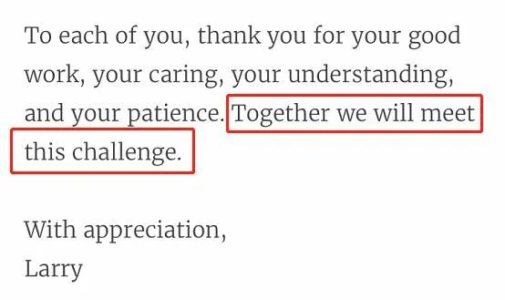

韩国战疫：重点调查新天地教会成员访问武汉情况
原文链接 备份链接 爱丁堡大学医学院公共卫生专家斯立德哈尔认为，全球疫情已经呈现多处无关联暴发，这意味着新型冠状病毒已大流行，各国政府应该确保医疗系统的医治能力，同时教育民众以减缓传播。 本文 2467字，阅读全文约3分钟 3月2日，韩 …

据央视新闻，当地时间3月24日，经央视记者确认，被誉为“病毒猎手”的美国哥伦比亚大学公共卫生学院感染与免疫中心主任、传染病学专家利普金教授(Walter Ian Lipkin)确诊感染新冠病毒。

图片来源：新浪微博@央视新闻
值得注意的是，利普金教授于今年1月底就新冠疫情控制专程访华，与国内专家进行交流。
此外，今日早些时候，美国哈佛大学校长也发文宣布自己和妻子确诊感染新冠肺炎。

美国“病毒猎手”确诊感染新冠病毒
1月底曾就新冠疫情控制专程访华
据了解，利普金教授目前仅有发烧、咳嗽及低烧等轻症现象。他对媒体表示，自己的感染说明任何人都可能暴露在新冠病毒之下并被感染。
据新华社此前报道，2003年，在中国SARS疫情高峰期，利普金教授被中国有关方面邀请到北京，帮助评估疫情和制定应对方案。疫情得到控制后，他帮助中国建立了一系列应对传染病的基础设施。2015年利普金获得“中华人民共和国国际科学技术合作奖”。
利普金现任美国哥伦比亚大学公共卫生学院感染与免疫研究中心教授。由于他在协助世界卫生组织和多个国家处理纽约西尼罗病毒、SARS、MERS等众多传染病上的丰富经验，被称为“世界上最知名的病毒猎手”。
今年1月底，利普金教授专程前往中国协助新冠疫情防治。1月30日，利普金教授在广州跟中国工程院院士钟南山会面，商讨抗击疫情的策略。2月21日，返回美国后刚刚结束隔离的利普金教授接受了央视专访。
在16分钟的访问中，利普金教授提及了自己作为“病毒猎手”的日常工作、他中国之行的所见所感。他还通过访问，呼吁人们一方面要通过可信的新闻机构获取信息，防止阴谋论的出现；另一方面，在疫情尚未结束前不要放松，做好与病毒长期斗争的准备。
在专访中，利普金教授介绍说，此次前往中国，他还与包括中国工程院院士钟南山教授在内的中国专家学者进行了交流。“钟南山教授和我从2003年起就是朋友了。我们在‘非典’期间见过面，这次又见面了。尽管他已经不年轻了，但是他工作仍非常努力。”

图片来源：视频截图
在谈及“当新的传染性病毒出现的时候，‘病毒猎手’都会做什么”这一问题时，利普金教授表示，我们首先会取得样本判断是不是病毒。有时候不是病毒，有时是细菌，有时是真菌，有时是毒素。所以你首先要通过数据确定方向。我们要知道人们为什么生病，这是最关键问题。
所以首先要确定到底是什么问题，然后把信息告诉其他科学家，让他们也可以展开研究。然后向政府和卫生单位相关人员告知，以便他们想出针对暴露在这些因素中的人们降低风险的方案。
在专访中，利普金教授还指出，中国奋力抗击疫情的努力令人感动。

有很多事情让我感到深刻。当你看到不止武汉和湖北的人，包括更大范围，北京、广州的人受影响，学校也关了，这对人们来说都是很难的。所以尽快恢复正常生活尤为重要。
我们遇到争分夺秒工作试图控制疫情的人们，特别是医生和护士还有其他在医院工作的人员，他们暴露在病毒前，有人病了，甚至有人因此去世，这些都非常让我感动。
我对中国人民由此在经济上、社会上的痛苦都感同身受。


图片来源：央视新闻视频截图
记者问利普金教授如何看待当发生公共卫生危机时，与病毒一起蔓延的往往还有谣言、偏见和歧视以及人为制造的恐慌等。
利普金教授指出，传统媒体应在传播疫情信息、真实反映疫情变化等方面发出及时、准确的声音。他说：“你是记者。你所供职的就是一家新闻媒体机构。今天，你在这里采访我，我向你介绍防控新冠肺炎疫情的准确信息，我知道你也会准确地传达给广大受众。但在互联网平台上，未经核实的错误信息很容易得到广泛传播。错误的信息、甚至阴谋论等有着广阔的生存空间。”
美国哈佛大学校长宣布确诊感染新冠肺炎
同样在今天，与哥伦比亚大学同为美国常春藤盟校之一的哈佛大学也传来有人确诊的消息。
据央视新闻，当地时间3月24日（北京时间3月25日凌晨），哈佛校长劳伦斯·巴考在一份致哈佛社区声明中宣布，自己和妻子均被确诊感染新冠肺炎。

当地时间3月24日，劳伦斯·巴考致哈佛社区声明自己和妻子均被确诊感染新冠肺炎
“我们从周日开始出现症状。先是咳嗽，然后是发烧，发冷和肌肉酸痛。我们在周一与我们的医生联系。我们昨天进行了测试，几分钟前才收到结果。”巴考表示不确定自己和妻子是如何感染的，但是表明他最近接触的人员数量甚少，并从3月14日开始，两人均已在家工作。
当地时间3月13日，哈佛大学在确诊首例COVID-19新冠确诊病例时，校长劳伦斯·巴考曾给全校师生发了一封公开信鼓励大家。

来自哈佛大学官网 校长劳伦斯·巴考公开信截图
在这封信的最后他写道，“没人能预知后面几个星期，我们即将面临的是什么，但每个人都明白COVID-19将考验我们在危机时刻所显示超脱于自我的善良和慷慨。我们的任务是在这个非我所愿的复杂混沌的时刻，展示自己最好的品格和行为。愿我们的智慧和风度同行。”
当地时间3月18日，哈佛校长还在一封公开信中感谢学校社区为抗击新冠肺炎疫情付出的努力，并在信的结尾呼吁大家共同面对疫情挑战。

来自哈佛大学官网 校长劳伦斯·巴考公开信截图
据悉，巴考现年68岁，2018年起担任哈佛大学第29任校长。
此外，《哈佛大学校报》24日援引哈佛大学卫生服务中心数据说，截至24日下午，哈佛有18名教职员工新冠病毒检测结果呈阳性。本月早些时候，哈佛已将春假之后课程改为网络授课，建议学生春假后不要返回校园，并要求本科生腾空宿舍。
据央视新闻，当地时间3月24日，世卫组织发言人玛格丽特·哈里斯表示，过去24小时内85%的新冠肺炎新增病例来自欧洲及美国，美国新冠肺炎确诊病例迅速增加，有可能成为全球新冠肺炎疫情“震中”。
据约翰斯·霍普金斯大学数据，截至美国东部时间24日17：40，美国新冠确诊病例为53268例，死亡696例，连续第二天新增病例超过1万例（截至23日美国累计确诊病例33073例，截至24日美国累计确诊43214例）。
当地时间3月24日，据美国纽约州州长科莫，目前全美受到新冠肺炎影响最大的“震中”纽约州，确诊病例已达25665人，其中3234人入院就医，756人进入加护病房（ICU）。此外，纽约州因新冠肺炎死亡人数达到210人。其中，纽约市确诊病例14904人，死亡125例。

图片来源：央视新闻
来源：每日经济新闻综合央视新闻、新华社


推荐阅读

点击大图 |一个华尔街投资银行家的至暗时刻

点击大图 |市委书记、市长带头“下馆子”！网友被这波“站台”馋哭了！

原文链接 备份链接 爱丁堡大学医学院公共卫生专家斯立德哈尔认为，全球疫情已经呈现多处无关联暴发，这意味着新型冠状病毒已大流行，各国政府应该确保医疗系统的医治能力，同时教育民众以减缓传播。 本文 2467字，阅读全文约3分钟 3月2日，韩 …
原文链接 备份链接 随着新冠病毒在世界范围内快速传播，全球大流行的趋势似乎无可避免。但在要不要宣布全球大流行的问题上，依然存在两极的看法。 日内瓦当地时间 3 月 3 日，世界卫生组织对外发布了最新一期新型冠状病毒肺炎情况发展的每日报告。 …
原文链接 备份链接 【财新网】（记者 丁捷 综合）疫情肆虐两月有余，随着病死率下降，全国累计治愈出院病例超过4万，中国疫情得以缓解。但病毒触角已伸及南极洲外地球上的所有大洲，其他国家风险上升，目前中国确诊境外输入性病例五例，其中宁夏两例、 …
原文链接 备份链接 近期，多国新冠肺炎感染者数量持续攀升。截至目前，意大利累计死亡患者人数已经达到17人，确诊病例增至655例，疫情蔓延至意大利13个大区。 而作为当前受新冠肺炎疫情影响最严重的欧洲国家，意大利的多项经济活动正在经受冲击。 …
原文链接 备份链接 世界卫生组织官员对韩国和伊朗等地爆发新冠病毒疫情表示担忧，但表示情况尚未上升到大流行病的程度。在美欧金融市场，这一模式已变得清晰：新增确诊病例数=增加的市场恐慌=疲弱的资本市场。这一模式会否必然在中国出现，尚待观察 …